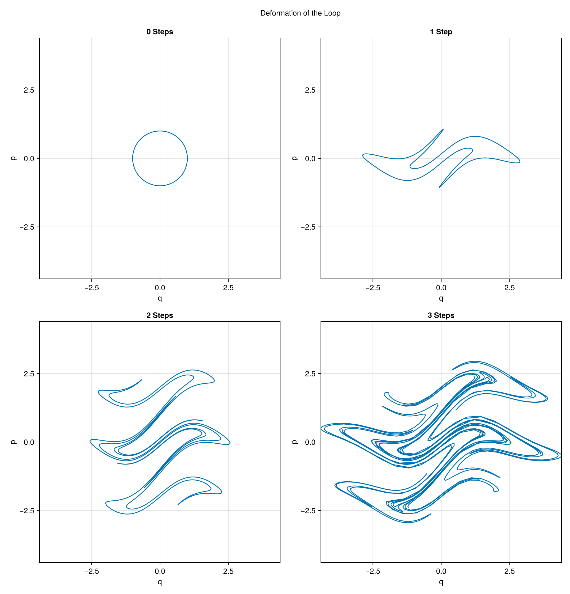
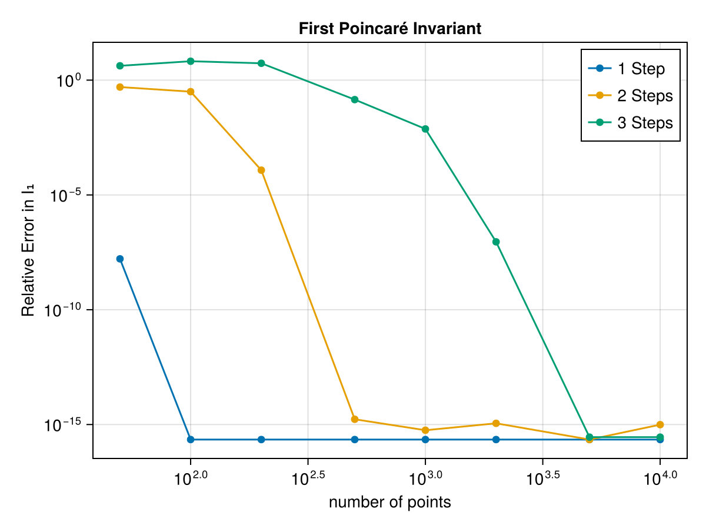
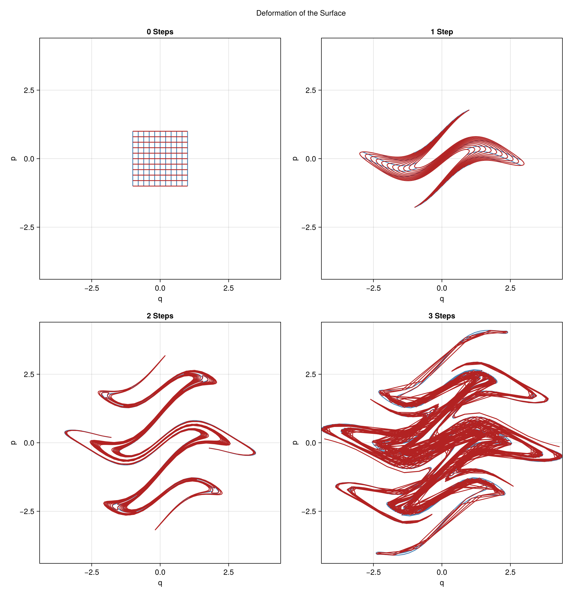
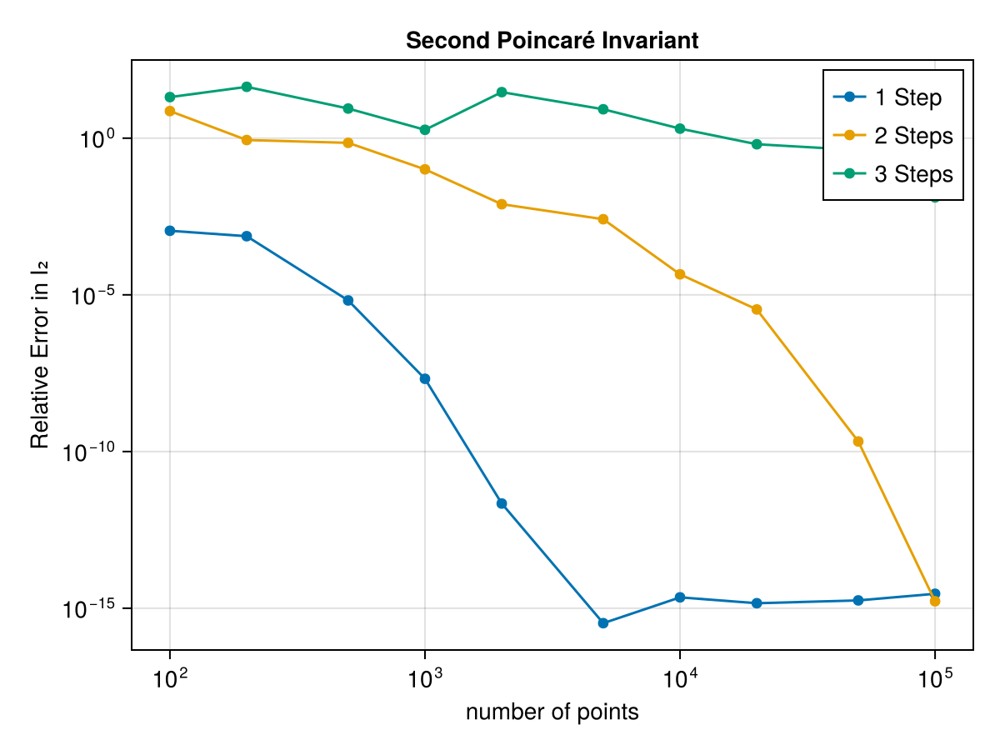

Convergence
Having seen how the invariants are represented and computed (see Theory and Implementation), we now study the accuracy of that computation: how well are the first and second Poincaré invariants approximated as we increase the number of sample points, and how does this hold up when the curve or surface is severely deformed? Answering this tells us how many points to budget for a given accuracy when the package is applied to real dynamics, as in the tutorial and examples.
To that end we apply an analytic area-preserving ("symplectic") map repeatedly to an initial curve and surface. Because the map preserves area, it preserves both Poincaré invariants exactly, so any deviation of the computed value is purely a discretisation error.
using PoincareInvariants
using CairoMakie
# an area-preserving map: two shears followed by a 90° rotation
function wavy(x, y)
y = y + 2 * sinpi(x)
x = x - y * exp(-y^2 / 4)
return -y, x
end
# apply the map n times
wavy(x, y, n) = n == 0 ? (x, y) : wavy(wavy(x, y)..., n - 1)
# initial unit circle (first invariant I₁ = π) and 2×2 square (second invariant I₂ = 4)
loopmap(θ, n) = wavy(cospi(2θ), -sinpi(2θ), n)
surfmap(x, y, n) = wavy(2x - 1, 2y - 1, n)
# relative error clamped to machine epsilon so it can be shown on a logarithmic axis
relerr(I, I0) = max(abs(I - I0) / abs(I0), eps())
# step label used throughout, e.g. "1 Step", "3 Steps"
steplabel(n) = "$n Step" * (n == 1 ? "" : "s")Deformation of the Loop
Applying the map repeatedly winds the initial unit circle into an increasingly intricate curve:
θs = range(0, 1; length = 2000)
positions = [(1, 1), (1, 2), (2, 1), (2, 2)]
curves = [[loopmap(θ, n) for θ in θs] for n in 0:3]
# shared square limits so all four panels have the same size and a 1:1 aspect ratio
allpts = reduce(vcat, curves)
xr, yr = extrema(first.(allpts)), extrema(last.(allpts))
cx, cy = (xr[1] + xr[2]) / 2, (yr[1] + yr[2]) / 2
r = max(xr[2] - xr[1], yr[2] - yr[1]) / 2
lims = (cx - r, cx + r, cy - r, cy + r)
fig = Figure()
for (n, pos, pts) in zip(0:3, positions, curves)
ax = Axis(fig[pos...]; xlabel = "q", ylabel = "p",
width = 450, height = 450, limits = lims, title = steplabel(n))
lines!(ax, first.(pts), last.(pts))
end
Label(fig[0, :], "Deformation of the Loop")
resize_to_layout!(fig)
fig
First Invariant
We compute the first invariant $I_1 = \oint_\gamma p \, dq = \pi$ on the deformed loop for a range of point numbers. Because the loop stays smooth and periodic under wavy, the FirstFourierPlan converges spectrally: with enough points the relative error falls to essentially machine precision, even for the more strongly deformed curves. As the number of deformation steps grows, the curve winds tighter and more points are needed before this spectral convergence sets in.
Ns = [50, 100, 200, 500, 1000, 2000, 5000, 10000]
fig = Figure()
ax = Axis(fig[1, 1]; xscale = log10, yscale = log10,
xlabel = "number of points", ylabel = "Relative Error in I₁",
title = "First Poincaré Invariant")
for n in 1:3
errs = map(Ns) do N
pinv = CanonicalFirstPI{Float64, 2}(N)
relerr(compute!(pinv, getpoints(θ -> loopmap(θ, n), pinv)), π)
end
scatterlines!(ax, Ns, errs; label = steplabel(n))
end
axislegend(ax; position = :rt)
fig
Deformation of the Surface
The same map, applied to the initial 2×2 square, folds it into an increasingly convoluted surface. To visualise this we track a family of grid lines running in the two parameter directions and follow their images under the deformation:
ts = range(0, 1; length = 200)
grid = range(0, 1; length = 11)
positions = [(1, 1), (1, 2), (2, 1), (2, 2)]
# constant-x (vertical) and constant-y (horizontal) grid lines, deformed n times
gridlines(n) = (
[[surfmap(x, t, n) for t in ts] for x in grid],
[[surfmap(t, y, n) for t in ts] for y in grid],
)
panels = [gridlines(n) for n in 0:3]
# shared square limits so all four panels have the same size and a 1:1 aspect ratio
allpts = reduce(vcat, [reduce(vcat, [vert; horz]) for (vert, horz) in panels])
xr, yr = extrema(first.(allpts)), extrema(last.(allpts))
cx, cy = (xr[1] + xr[2]) / 2, (yr[1] + yr[2]) / 2
r = max(xr[2] - xr[1], yr[2] - yr[1]) / 2
lims = (cx - r, cx + r, cy - r, cy + r)
fig = Figure()
for (n, pos, (vert, horz)) in zip(0:3, positions, panels)
ax = Axis(fig[pos...]; xlabel = "q", ylabel = "p",
width = 450, height = 450, limits = lims, title = steplabel(n))
for line in vert
lines!(ax, first.(line), last.(line); color = :steelblue)
end
for line in horz
lines!(ax, first.(line), last.(line); color = :firebrick)
end
end
Label(fig[0, :], "Deformation of the Surface")
resize_to_layout!(fig)
fig
Second Invariant
The second invariant $I_2 = \int_S dq \wedge dp = 4$ is computed with the Chebyshev/Padua representation of the surface (SecondChebyshevPlan). The two-dimensional surface is markedly harder to resolve than the one-dimensional loop: even a single application of the map needs far more sample points than the corresponding loop computation, and each additional deformation step pushes the point count needed for convergence up sharply, mirroring the way the grid-line plots above fold the surface over itself ever more tightly. Once deformed, the error reaches machine precision within a few thousand points; twice deformed, only near the largest counts tested; and for the thrice-deformed surface the error lingers at order unity across most of the range, beginning to fall appreciably only at the very largest point count. This underlines how much more expensive an accurate bivariate polynomial representation becomes as the surface is folded.
Ns = [100, 200, 500, 1000, 2000, 5000, 10000, 20000, 50000, 100000]
fig = Figure()
ax = Axis(fig[1, 1]; xscale = log10, yscale = log10,
xlabel = "number of points", ylabel = "Relative Error in I₂",
title = "Second Poincaré Invariant")
for n in 1:3
errs = map(Ns) do N
pinv = CanonicalSecondPI{Float64, 2}(N)
relerr(compute!(pinv, getpoints((x, y) -> surfmap(x, y, n), pinv)), 4.0)
end
scatterlines!(ax, Ns, errs; label = steplabel(n))
end
axislegend(ax; position = :rt)
fig
Conclusions
Both FirstFourierPlan and SecondChebyshevPlan (see Using Different Integral Implementations) are spectral methods, so with enough points they recover the invariants to high accuracy on smooth, moderately deformed loops and surfaces alike. The loop's one-dimensional Fourier representation keeps up with even severe deformation once enough points are used; the surface's two-dimensional Chebyshev/Padua representation is inherently more expensive and, under the most severe deformation, can require far more points than are practical to reach the same accuracy. This is exactly the trade-off to keep in mind when tracking invariants along the flow of a dynamical system: the finer the structure that develops, the more samples the computation needs to remain trustworthy.